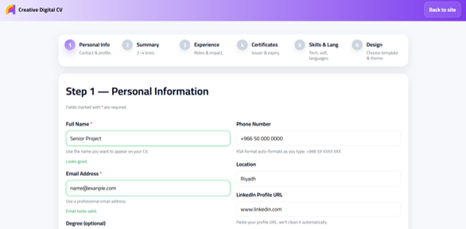
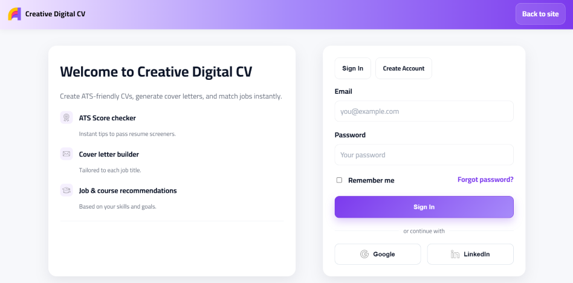

Creative Digital CV
AI-assisted platform for generating ATS-ready CVs, matching job opportunities, and recommending learning paths.
Fragmented career workflow
Users often jump between disconnected tools for CV writing, ATS formatting checks, job discovery, and certification planning. That fragmentation creates low confidence, duplicated effort, and weak job-market readiness.
One guided career platform
Creative Digital CV unifies CV generation, ATS-readiness, opportunity matching, and personalized learning recommendations in one flow, reducing friction and helping users act faster with clearer decisions.
What I led and delivered
Team Leadership
- Led project planning and delivery milestones.
- Assigned tasks based on strengths and priorities.
- Coordinated collaboration across the full team.
Web Development
- Designed and built core application structure.
- Developed responsive user interfaces.
- Improved usability across major user flows.
Database Integration
- Connected PHP backend with MySQL database.
- Mapped application forms to structured data models.
- Stabilized data flow for CV and profile logic.
Recommendation Engine
- Worked on recommendation flow design.
- Improved matching relevance for opportunities.
- Aligned learning suggestions with user profile context.
Core product capabilities
ATS CV Builder
Create structured ATS-friendly CVs optimized for screening systems.
LinkedIn Integration
Retrieve and map profile information to reduce manual form effort.
AI Recommendations
Recommend certifications and learning paths relevant to user goals.
Job Matching
Match users with relevant opportunities based on profile context.
Cover Letter Builder
Generate tailored cover letter drafts aligned with role requirements.
From profile input to CV output
User Information
CV Generation
ATS Analysis
Recommendations
Job Matching
Download CV
Security-aware design mindset
- User authentication planning.
- Input validation across key forms.
- Database access control boundaries.
- Session management awareness.
- Protection of personal information.
Roadmap for hardening
- Multi-factor Authentication (MFA).
- OAuth 2.0 identity integration.
- Encryption at Rest for sensitive data.
- Secure audit logs and monitoring.
- Rate limiting for abuse protection.
- OWASP Top 10 hardening process.
Categorized implementation stack
Frontend
HTML CSS JavaScriptBackend
PHPDatabase
MySQLIntegration
LinkedIn APIKey product screens

Dashboard
Main workspace with quick access to CV creation and personalized recommendations.

CV Builder
Step-by-step flow for generating ATS-ready CVs with structured inputs.

Authentication
Login experience for secure access and continuity across user sessions.
Delivered a complete career-tech platform
Successfully delivered an integrated web platform combining ATS-friendly CV generation, job matching, and personalized learning recommendations.